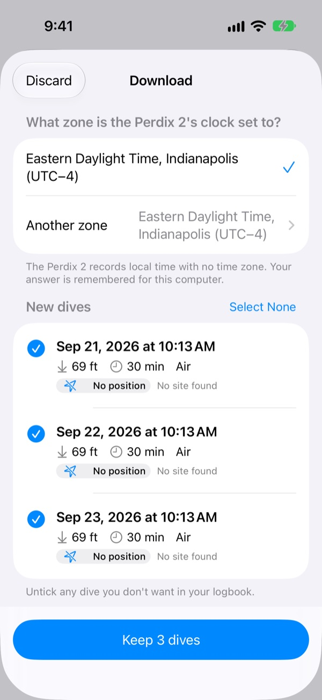
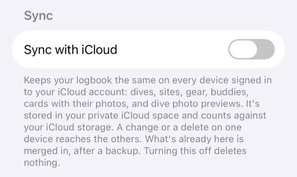
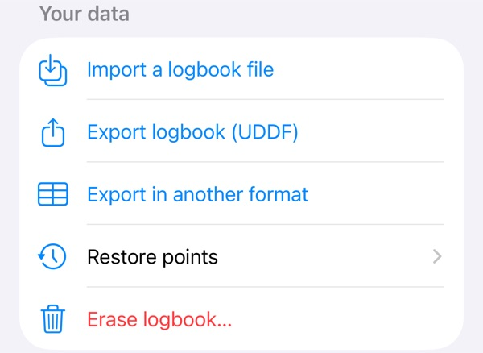

Something not working? See Troubleshooting. Thermocline is a logbook: it shows what your dive computer recorded and never calculates decompression.
Get the app
Thermocline is for Apple devices only: iPhone, iPad, Mac and Apple Watch. During the beta it's installed through Apple's TestFlight app.
- iPhone and iPad: join the iPhone beta. The Apple Watch app comes with it.
- Mac: join the Mac beta. The Mac app is a separate download that shares the same logbook through iCloud.
- Keep both up to date. When TestFlight offers a new build, update every device you use. An older build stops sending changes until it's updated, and says so. Nothing is lost.
First launch and the tour
The first launch asks your name, your units and where your dives come from. Units are stored in metric; changing them only changes the display.
iPhone and iPad
Everything else lives in the Profile tab. Profile → Help → Show the tour walks through every screen on a sample logbook, not yours.
Mac
Settings are under Thermocline → Settings. Help → Take the Tour opens the tour on a sample logbook.

Screenshots on this page show the sample logbook from the tour: the dives and sites are made up.
Bring your logbook
Thermocline reads MacDive (its database, XML or UDDF), a Shearwater Cloud database, UDDF from any logbook, and CSV. You choose which dives to add, and anything it can't read is listed, never silently dropped.
iPhone and iPad
- Profile → Your data → Import a logbook file.
- Pick the file, from iCloud Drive or Files.
- Untick any dives you don't want, then Import.
Mac
- File → Import from MacDive… and choose MacDive's folder. This is the fullest route: dives, dive photos and card photos. MacDive's files aren't changed.
- For exported files (UDDF, MacDive, Shearwater Cloud, CSV), use the File menu's import command (⇧⌘I).
Coming from MacDive on iPhone only? In MacDive on your Mac, select your dives, choose Export → Dives → Selected as UDDF, save the file to iCloud Drive, and import it on the iPhone.
When the import finishes, a report shows how many dives were added, which items were not imported and why, and anything to check. Dives whose file had no gas wait in To confirm. A restore point is saved before any import of more than one dive, and on the Mac Undo Import… takes it back.
MacDive's UDDF export leaves out gear, gear sets, dive types and photos. Importing MacDive's folder on the Mac brings those across too.
Download dives from your computer
Put the dive computer in its Bluetooth mode first. On a Shearwater: Menu → Bluetooth. It stays there about two minutes. Only dives newer than your last download are fetched.
iPhone and iPad (Bluetooth)
- Logbook → Download Dives.
- Pick your computer under Nearby. The first time, type the PIN shown on its screen.
- Untick any dive you don't want, then Keep. Unticked dives stay on the computer and are offered again next time.
Mac (Bluetooth or cable)
- File → Download from Dive Computer… (⇧⌘D).
- Choose Bluetooth or USB Cable as the connection.
- For a cable, pick your computer's model and its port, follow Before you start, then Download.
The clock question. The first download from each computer asks What zone is the computer's clock set to? Most computers record local time with no time zone, so this keeps your dive times right when you travel. The answer is remembered for that computer.

After choosing dives, you can step through them one by one to set the site and gases, or Finish later: they wait in To confirm.
Deleted a dive and want it back? Turn on Download every dive on the computer. It takes longer; dives already in your logbook are skipped.
Shearwater Predator and Petrel 1
These use older Bluetooth (Bluetooth Classic) that iPhones and iPads can't use. On the Mac, pair the computer in System Settings → Bluetooth first, then choose USB Cable in the download window: its port may appear in the list. Put the computer in its Bluetooth upload mode and choose Download. This hasn't been tried on a real Predator or Petrel 1 yet, so please send the download log whether it works or not. On iPhone, import their dives from Shearwater Cloud or a UDDF file instead.
Supported computers
Thermocline downloads with libdivecomputer, the open-source library many logbooks share. It knows several hundred models from most makers. To see yours, open the download screen and choose Supported computers; each one says whether it works on iPhone and iPad or needs the Mac.
| Connection | Where it works | Tried so far |
|---|---|---|
| Bluetooth LE | iPhone, iPad and Mac | Shearwater Perdix and Perdix 2. Other models should work: tell us. |
| USB or serial cable | Mac only | Built, not yet tried on real hardware. |
| Bluetooth Classic (Predator, Petrel 1 and other older models) | Mac only, paired as a serial port | Not yet tried. |
Got a computer we haven't tried? Help us test it.
Confirm site and gases
Dives still missing a site or confirmed gases wait in To confirm. Nothing stops them saving; fill them in when you like.
iPhone and iPad
They're at the top of Logbook under To confirm. Open one, then Choose a site and tap Yes, these gases are right (or Correct Gas…).
Mac
Go → To Confirm (⌘2). The banner on each dive offers Confirm Site and Gases…, Choose Site… or Confirm Gases….
Thermocline suggests the site from the dive's position: your own sites first, then the built-in lists of more than 73,000 dive sites and wrecks, which work offline.

Read a dive
- Safety values sit in a fixed strip at the top of every dive, always in the same place.
- The profile: drag across the chart (iPhone) or point at it (Mac) to read any moment. Chips under the chart show or hide Tank, SAC, Temp, ppO₂, CNS and Ascent, as Stacked strips or one Overlay. Try it on the home page.
- Gas use: tap or click How? next to the SAC figure to see every input: the cylinder, its water capacity, pressures, temperature and the real-gas correction.
- Editing: edit any dive, or log one by hand (Logbook → Log by Hand, or ⌘N on the Mac). A correction keeps the computer's original reading.


Sites, positions and the Apple Watch
iPhone and iPad
- Profile → Sites, then the add button: Find or name a site or Mark spot here (GPS).
- A site without a position offers Find position: check the suggestion on the map, type in coordinates, or drop a pin.
Mac
- Go → Sites (⌘4), then Add Site….
- Find Positions… works through every site without one, one at a time.
Apple Watch: at the surface, open Thermocline on the watch and press Mark spot once it has a good fix. You can add a name. The spot goes to your iPhone, which looks it up and puts it in To confirm.

Site positions are for logging, not for navigation.
Gear and tanks
- Profile → Gear on iPhone, Go → Gear on the Mac.
- On a cylinder, Model opens the cylinder catalogue: search by maker or model (for example "PST LP104") to fill in its published sizes, or type your own numbers.
- Tick Doubles (manifolded pair) for a twinset.
- A steel tank stamped with a +: turn on Plus rating while the last hydro test kept the +. It shows as, for example, 2400+. This switch appears when cylinder sizes are shown in cubic feet.
- Tanks on each dive are under the dive's gas section (Add tank, Gear set).
Merge and join dives
- Merge is for one dive recorded by two computers. Both recordings are kept and you can switch between them on the chart.
- Join is for one dive split in two by a brief surfacing.
- Thermocline never does either on its own. When it spots a likely pair, a banner at the top of the logbook offers to Review them.
- To do it yourself: on iPhone, tap Select, choose two dives, then Merge or Join. On the Mac, select two dives and right-click: Merge These Dives… or Join These Dives….
- Changed your mind? Use Undo straight away, or Separate these dives on the dive at any time.
Photos and video links
- Add photos on a dive copies them from your library into the logbook.
- To save iCloud space, turn on Sync → Save iCloud storage on dive photos on every device. Photos are then linked to iCloud Photos instead of copied, and videos from your library can be added. Thermocline asks for Photos access only when you turn this on.
- Video links: paste a YouTube or Vimeo link under a dive's photos. Only the link is kept.
Sync with iCloud
Turn on Sync with iCloud on each device: Profile → Sync on iPhone, Thermocline → Settings → Sync on the Mac. Every device signed in to the same Apple Account then shares one logbook, stored in your own private iCloud. Changes made offline wait on the device and send when it's back online.
The Sync section shows the status, anything Waiting to send, and whether this device and your others match. Sync now checks straight away.

Export, restore points and erase
- Export: Profile → Your data on iPhone, or the File menu on the Mac. UDDF is the complete export and your way out to any logbook. Also available: a spreadsheet (CSV), MacDive XML, bookmarks for cave survey (CSV) and an experience summary (text) for course prerequisites.
- Restore points: Profile → Your data → Restore points (Mac: Settings → Your data → Restore Points). One is saved before turning on sync, before a large import, a merge, a join, an erase and before anything is deleted. Restoring saves your current logbook as a restore point first, so you can undo it.
- Erase: Erase logbook… offers to export first. With sync on, your other devices follow.

Still stuck?
See Troubleshooting, or send feedback from TestFlight or to support@thermoclineapp.com.